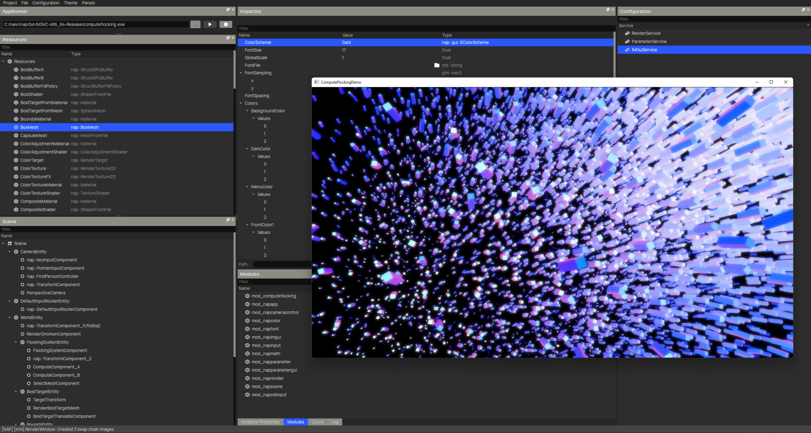
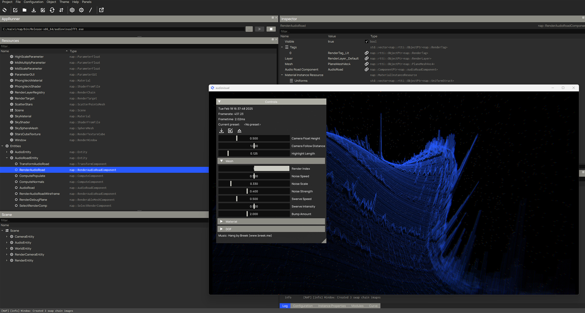

NAP Framework
2020 - present
NAP is a C++ open-source real-time control & visualization platform used to build large audiovisual installations & control high-precision robotics.
I have been involved as a core developer since 2020, and have since made important contributions to the project, among which:
- General purpose compute pipeline for the Vulkan render engine.
- Core advanced rendering module, adding light system, shadow & cube maps and more.
- High-resolution (32K+) built-in frame capture.
- Core FFT module
- EtherCAT MainDevice module
I wrote a number of blogs about my work at NAP:
- The Software Powering Within-Without's Light Ring
- High-Res Vulkan Screenshot Capture
- Vulkan GPU Compute
NAP Framework logo

NAP flocking demo

NAP FFT demo